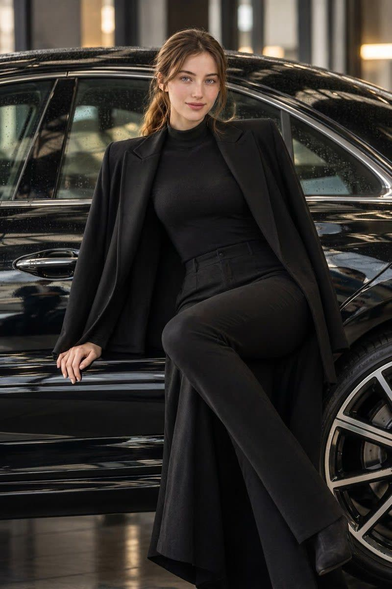

Luxury Fashion Editorial Photo
WRD-002WardrobeNano Banana Proby AynahOctober 7,

A detailed prompt for generating a high-end fashion editorial photo featuring an elegant woman posing against a black luxury sedan, emphasizing realistic textures and cinematic lighting.
Prompt
Ultra-realistic high-end fashion editorial photo of an elegant young woman posing against a glossy black luxury sedan. She is seated sideways on the edge of the car, with one leg crossed naturally over the other, one hand resting on the car beside her, and her body slightly angled toward the camera. She has shoulder-length softly wavy light-brown hair, delicate facial features, natural makeup, subtle eyeliner, and a calm, confident expression looking directly at the camera. She wears a fitted black high-neck top, tailored black trousers, and a long structured black blazer draped naturally over her shoulders. The blazer has sharp elegant shoulders and a sophisticated luxury-fashion silhouette. The black sedan fills the background, with glossy reflections, dark tinted windows, visible door handle and a large premium alloy wheel on the right side. Modern luxury showroom/indoor architectural setting, dark neutral tones, soft diffused cinematic lighting, realistic reflections on the car, shallow depth of field, subtle background blur, natural skin texture, detailed hair strands, realistic fabric texture, sophisticated black-on-black aesthetic, luxury automotive campaign, Vogue-style fashion photography, 85mm lens, eye-level camera, vertical full-body composition, photorealistic, ultra-detailed, 4K, no text, no watermark.
Tags: fashion, 9:16 vertical